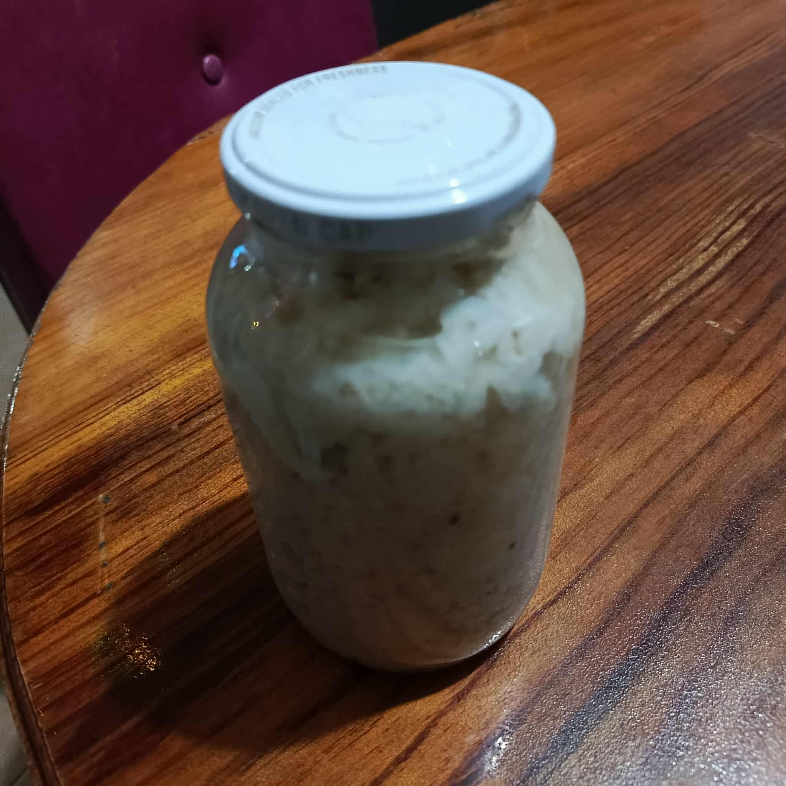

The Sweet Rice Wine of Cordillera.
The Cordillera region is famous for its rich culinary traditions, and Tapuy is one of its most cherished beverages. This sweet, slightly alcoholic rice wine is traditionally served during celebrations and special gatherings, offering a taste of Cordillera’s heritage in every sip.
Tapuy isn’t just a drink; it’s a symbol of community and celebration. Traditionally, it is served during festivals, weddings, and thanksgiving ceremonies. The preparation itself is a labor of love, requiring careful fermentation and attention to detail, which reflects the Cordillera people’s deep respect for food and tradition.
The first time I tasted Tapuy during a small Cordillera festival, I was struck by its sweet, comforting warmth. Sharing it with locals made me feel connected to their culture and traditions. I often enjoy Tapuy with grilled pork or roasted vegetables, which brings out its rich flavor even more. It’s more than a drink, it’s a story in a cup.